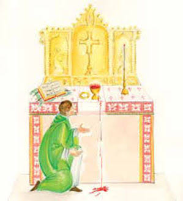
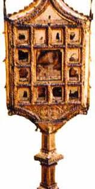
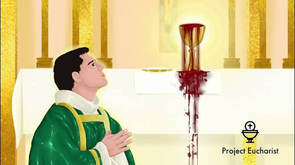

The 1010 Eucharistic miracle of Ivorra, Spain, occurred when a priest doubting the reality of transubstantiation witnessed the sacramental wine transform into real, overflowing human blood during Mass.
Father Bernat Oliver, struggling with intellectual doubt regarding the Eucharist, saw the wine in his chalice transform into blood during the consecration. It overflowed, staining the altar linens. This event, verified by Saint Ermengol and formally certified by a Papal Bull from Pope Sergius IV, serves as a powerful testament to the Real Presence of Christ.
The blood-stained corporal is preserved in a 15th-century Gothic reliquary within the local parish church. Each year on the second Sunday of Easter, the diocese celebrates the feast of La Santa Duda (The Holy Doubt), continuing the long-standing tradition of honoring this divine resolution to a human crisis of faith.